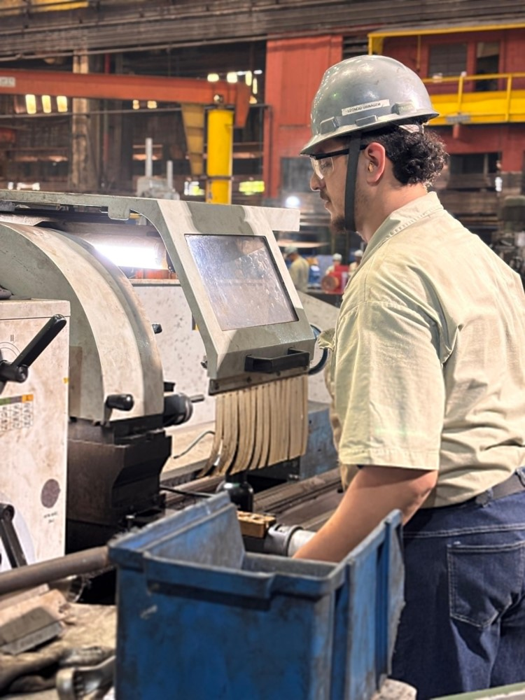
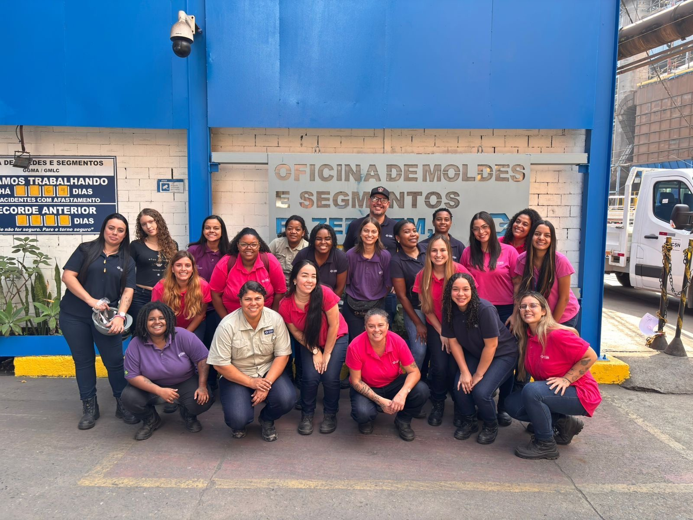
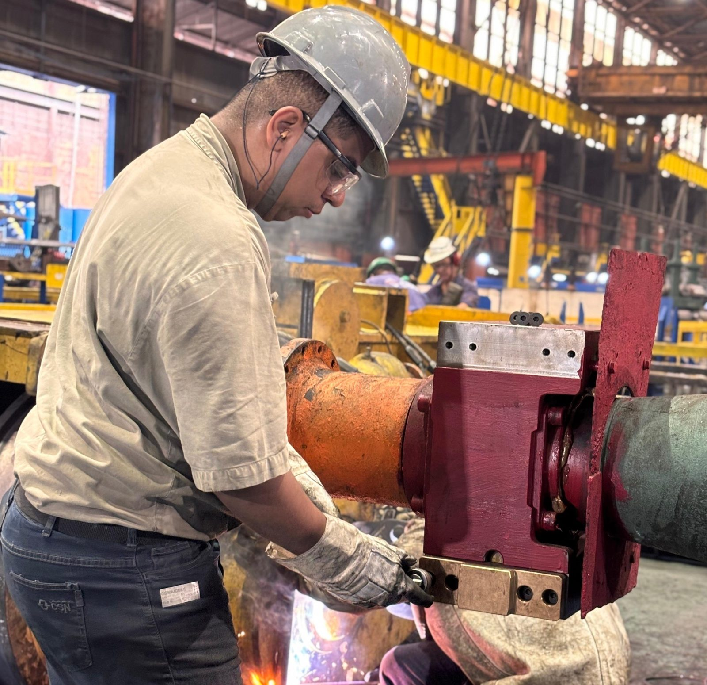

Cadastro
A peça entra no sistema com tipo, MCC e número do equipamento.
OMS · Oficina de Moldes e Segmentos · CSN
Cada molde e cada segmento das MCC 2, 3 e 4 — rastreado do reparo à linha, em um só sistema.
Cada peça que sai da oficina carrega uma história: quem fez o reparo, o que foi trocado, quanto ela aguentou na linha. O OMS guarda essa história inteira — do folhão ao veio, do veio à decisão.
O OMS em números
O ciclo de vida
A peça entra no sistema com tipo, MCC e número do equipamento.
Instalada no veio, na posição exata — com a data de entrada registrada.
Tonelagem e dias de uso acompanhados contra a meta de vida útil.
Troca guiada com a peça reserva, validando posição e veio.
Checklist por equipamento, folhão digital e laudo em PDF.
Liberada pela qualidade, volta pronta para a linha. E o ciclo recomeça.
A transformação
Recursos
Cada posição de cada veio, com o desgaste de cada peça medido contra a meta de vida útil.
Um folhão para cada tipo de equipamento. O progresso é salvo sozinho.
Troca entre oficina e linha com validação de posição e veio.
Tudo o que aconteceu com cada equipamento, em ordem, com autor.
A posição real de cada equipamento nas MCCs, em três dimensões.
Cada ação registrada. Painéis por MCC, por veio e por área.
Instalável como aplicativo. Funciona em campo e envia o que ficou pendente assim que a conexão volta.
Especialidades



Diversidade que transforma
Na OMS, a força feminina é protagonista — atuando diretamente na manutenção de moldes e segmentos, com precisão e cuidado em cada serviço.

Lingotamento contínuo
Veios C e D

Nossa origem
O OMS não nasceu em um escritório. Foi construído por engenheiros e mecânicos que vivem as dores reais do chão de fábrica — uma ferramenta que fala a língua da manutenção siderúrgica, troca o papel pelo dado e foca no que importa: a disponibilidade e a segurança dos ativos.
Nosso propósito
Cuidar da vida é o que nos move.
Promovemos um ambiente seguro e saudável com conhecimento, técnica, ética e colaboração — porque a segurança é um valor inegociável.